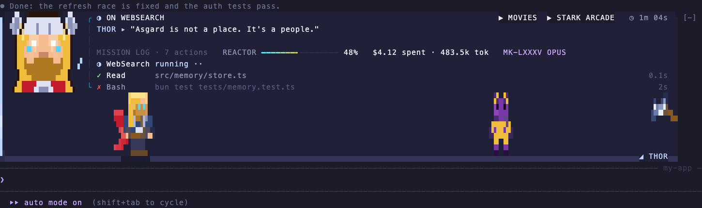
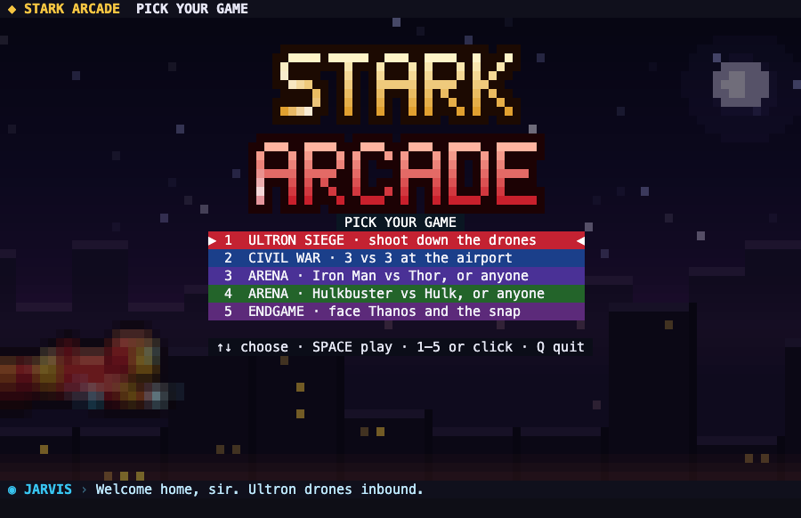
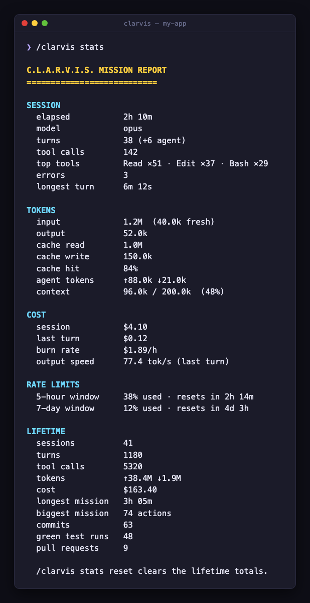
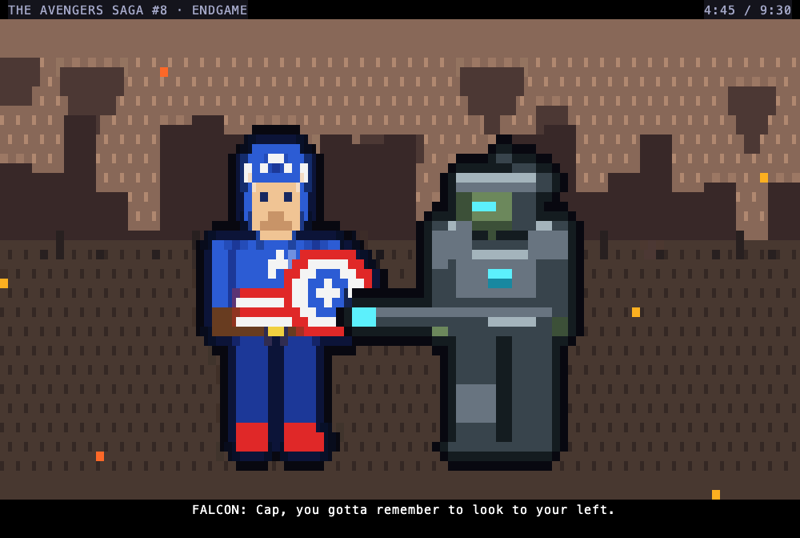
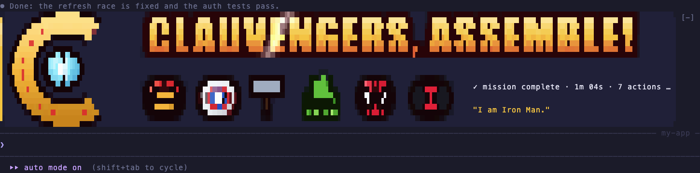

A new hero every 8 seconds, each with their own lines about your code.

Five arcade games, playable in a pane while Claude works.

Your tokens and spend, always on screen.

Ten comic episodes with panels, balloons and sound effects.

Finish a task, and the team assembles with your time, actions and cost.
Install in a minute
- Open Claude Code in your terminal. Check you're on 2.1.287 or later with
claude --version. - At the prompt, paste
/plugin install clarvis --marketplace shahsanket2107/clarvis. - Press
yto add the marketplace, then Enter to install for your user. The band appears right away. - For the arcade and theater, type
/tui fullscreenonce, then/clarvis playor/clarvis movies.
Built to stay out of your way
- It only watches and draws
- It never changes a tool call, a prompt or a permission decision.
- Nothing leaves your machine
- No network calls, no tracking, no processes, no reading your files.
- Free when idle
- Frames repaint only while something moves. At rest it does nothing.
- Your choice of volume
/clarvis calmkeeps the art and drops the motion./clarvis offbrings back the stock look.
Commands
/clarvis the briefing /clarvis stats tokens, cache, cost, limits /clarvis play the arcade /clarvis movies the theater /clarvis calm no motion /clarvis off stock Claude Code
Questions
- What is Clarvis?
- Clarvis is a free, open-source Claude Code plugin, a mod, that draws an Avengers-themed heads-up display above the Claude Code prompt: rotating pixel-art heroes while Claude works, live token, cache and cost tracking, a pixel arcade and a comic theater.
- How do I install Clarvis in Claude Code?
- At the Claude Code prompt, run /plugin install clarvis --marketplace shahsanket2107/clarvis, press y to add the marketplace, then Enter. It needs Claude Code 2.1.287 or later.
- Does Clarvis track Claude Code token usage and cost?
- Yes. The band shows context used, tokens in and out, cache hit rate, the session's cost and your 5-hour rate limit, and /clarvis stats prints a full usage report with lifetime totals.
- Does Clarvis send any data anywhere?
- No. It makes no network requests, has no analytics, and never changes a tool call, a prompt or a permission decision. It only watches and draws.
- Is Clarvis an official Marvel or Anthropic product?
- No. Clarvis is an unofficial, non-commercial fan project. It isn't made, licensed or endorsed by Marvel, Disney or Anthropic, and all of its art is original.